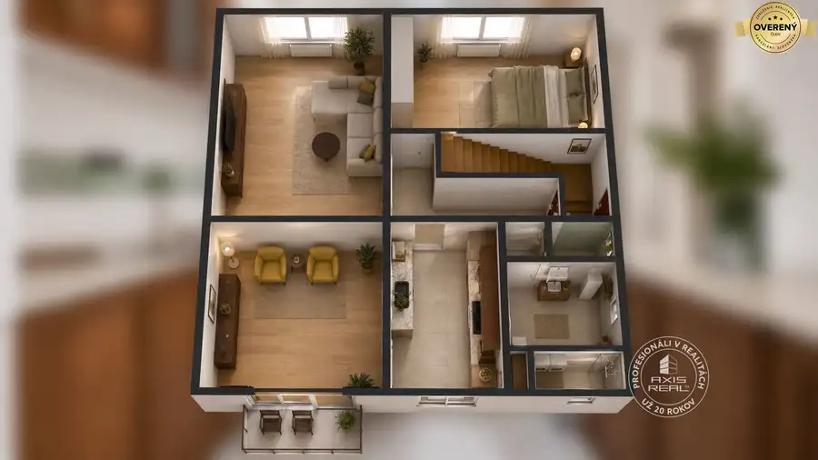
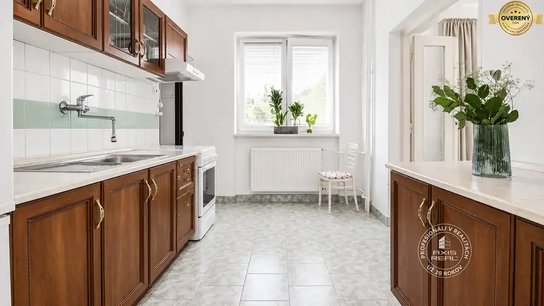
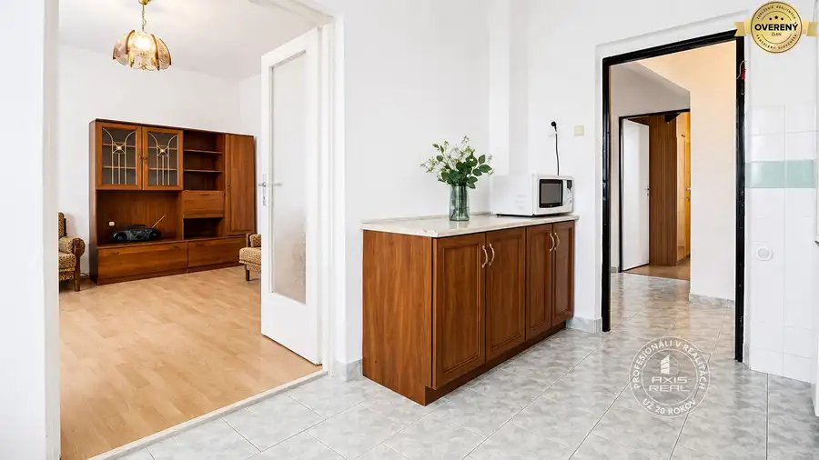
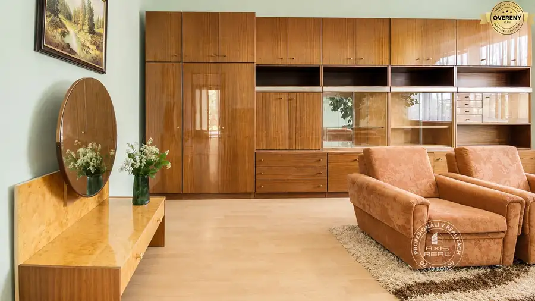
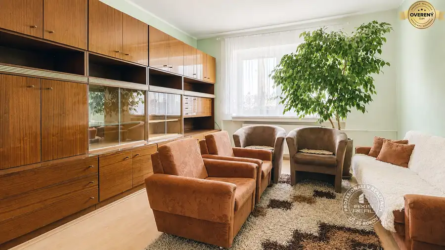
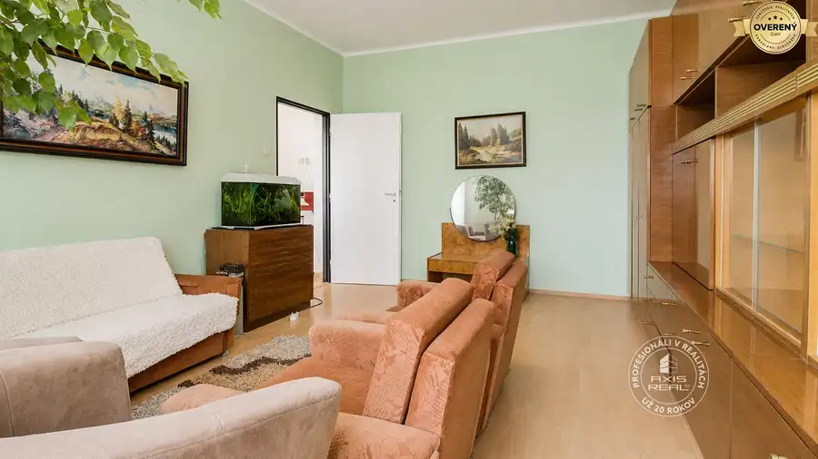
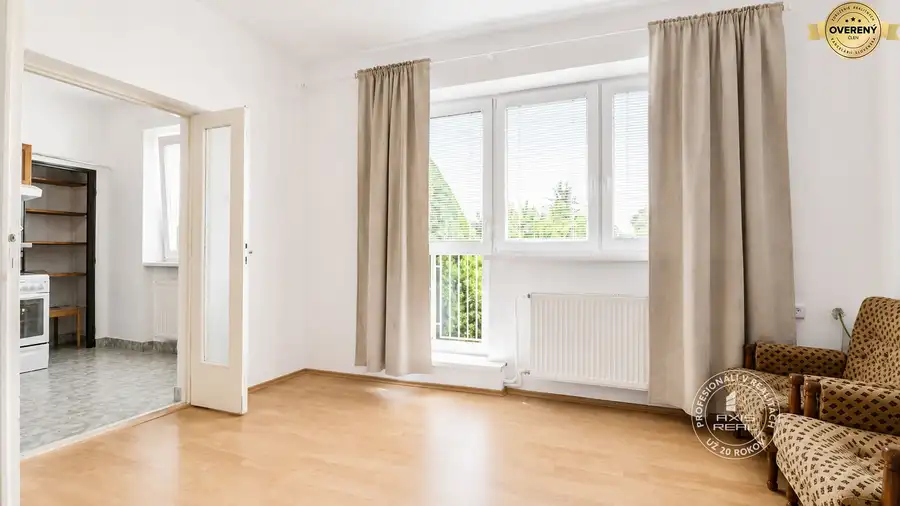

5-izb. rodinný dom so záhradou, 605 m2, LOZORNO, Potočná
Lozorno








- Dispozícia5-izbový
- Plocha251.34 m²
- Poschodie0. z 2
- Stavpôvodný
- Vlastníctvoosobné
O nehnuteľnosti
POPIS DOMU:
Realitná kancelária AXIS REAL ponúka exkluzívne na predaj slnečný 5-izbový RODINNÝ DOM so skvelým potenciálom na rekonštrukciu, so ZÁHRADOU, skladom náradia a garážou na POZEMKU s celkovou výmerou 605 m2 v lokalite Lozorno na ulici Potočná. Rodinný dom má 2 nadzemné podlažia (prízemie s úžitkovou plochou 100 m2 a podkrovie 51,34 m2) a celý je PODPIVNIČENÝ (100 m2). Celková úžitková plocha domu je 251,34 m2.
Výhody:
❶ Možnosť prestavby domu podľa vlastných predstáv
❷ Veľká záhrada, ktorá vám poskytne neobmedzený priestor pre oddych a relaxáciu, pre pestovanie kvetov, zeleniny alebo vytvorenie útulného záhradného posedenia pre vašu rodinu
❸ Tichá lokalita, kde môžete uniknúť rušnému mestskému životu a vychutnať si pokoj a súkromie a zároveň vám blízky les poskytne príležitosť na príjemné prechádzky alebo výlety do prírody
STAV DOMU:
Rodinný dom bol skolaudovaný v roku 1974. Nachádza sa v pôvodnom technickom stave, čo predstavuje ideálnu príležitosť na KOMPLETNÚ REKONŠTRUKCIU PODĽA VLASTNÝCH PREDSTÁV. Vďaka priestrannej dispozícii a pevnému základu ponúka široké možnosti modernizácie a vytvorenia komfortného rodinného bývania presne podľa vašich potrieb.
Dispozícia:
Suterén: technická miestnosť, dielňa, práčovňa, skladové priestory a garáž.
Prízemie: tri samostatné izby, kuchyňa, kúpeľňa, samostatné WC, chodba a zádverie. Z jednej izby je vstup na lodžiu.
Podkrovie: dve izby, chodba a povalový priestor s možnosťou ďalšieho využitia.
Na prízemí sú osadené plastové okná, v podkroví drevené okná s dvoj-sklom a vonkajšími roletami. Dom je vykurovaný ústredným plynovým kúrením s radiátormi. Podlahy tvoria PVC v kombinácii s keramickou dlažbou. Stavba je zastrešená sedlovou strechou.
Dom je napojený na všetky inžinierske siete – obecný vodovod, elektrinu, plyn a verejnú kanalizáciu (pripojenie od roku 2015).
Pozemok je rovinatý, čo poskytuje dostatok priestoru na oddychovú zónu, záhradu či ďalšie úpravy podľa predstáv nového majiteľa. V záhrade sa nachádza aj menší sklad náradia.
LOKALITA:
Rodinný dom sa nachádza v pokojnej zástavbe rodinných domov v centrálnej časti obce Lozorno, na Potočnej ulici, len pár minút pešo od kompletnej občianskej vybavenosti. V obci sa nachádza obecný úrad, pošta, materská a základná škola, kostol, potraviny, reštaurácie, základná zdravotná starostlivosť - detský a všeobecný lekár, dentista a lekáreň.
Lozorno patrí medzi vyhľadávané obce v blízkosti Bratislavy – do hlavného mesta sa autom dostanete približne za 20 minút vďaka rýchlemu napojeniu na diaľnicu D2.
Lokalita ponúka výborné podmienky na aktívny oddych aj relax. V blízkosti sa nachádza vodná nádrž Lozorno, cyklotrasy, turistické chodníky a Malé Karpaty. Len približne 1 km od domu je borovicový les a priamo oproti domu sa nachádza tenisové ihrisko a detské ihrisko, ktoré ocenia najmä rodiny s deťmi.
Tichá, bezpečná a príjemná lokalita s priateľskou atmosférou ponúka ideálne bývanie pre rodiny aj všetkých, ktorí hľadajú pokojné prostredie s výbornou dostupnosťou do Bratislavy.
Máte záujem o viac informácií alebo si chcete nehnuteľnosť pozrieť osobne? Kontaktujte ma a rada Vám zodpoviem všetky otázky a dohodnem termín obhliadky.
RNDr. Anna Capková | |
/ RODINNÝ DOM / PREDAJ / POZEMOK 605 M2 / ÚŽITKOVÁ PLOCHA 251,34 m2 / LOZORNO / POTOČNÁ ULICA /
© Text a fotografie sú autorským dielom a vlastníctvom realitnej kancelárie Axis real.
Parametre
- Rozloha pozemku
- 605 m²
- Zastavaná plocha
- 306 m²
- Celková rozloha
- 605 m²
- Úžitková plocha
- 251.34 m²
- Poschodie
- prízemie
- Počet poschodí
- 2
- Počet izieb
- 5
- Vlastníctvo
- osobné
- Stav
- pôvodný
- Status
- aktívne
- Odvoz odpadu
- áno - separovaný
- Voda
- verejný vodovod
- El. napätie
- 230V
- Plyn
- áno
- Kanalizácia
- áno
- Kúpeľňa
- áno
- Vykurovanie
- vlastné - plyn
- Balkón
- áno - 1
- Pivnica
- áno
- Garáž
- áno
- Inžinierske siete
- áno
- Postavené z
- tehla
- Predzáhradka
- áno
- Okná
- plastové
- Terén
- rovina
- Prístupová cesta
- asfaltová cesta
- Dátum zverejnenia
- 2026-07-20